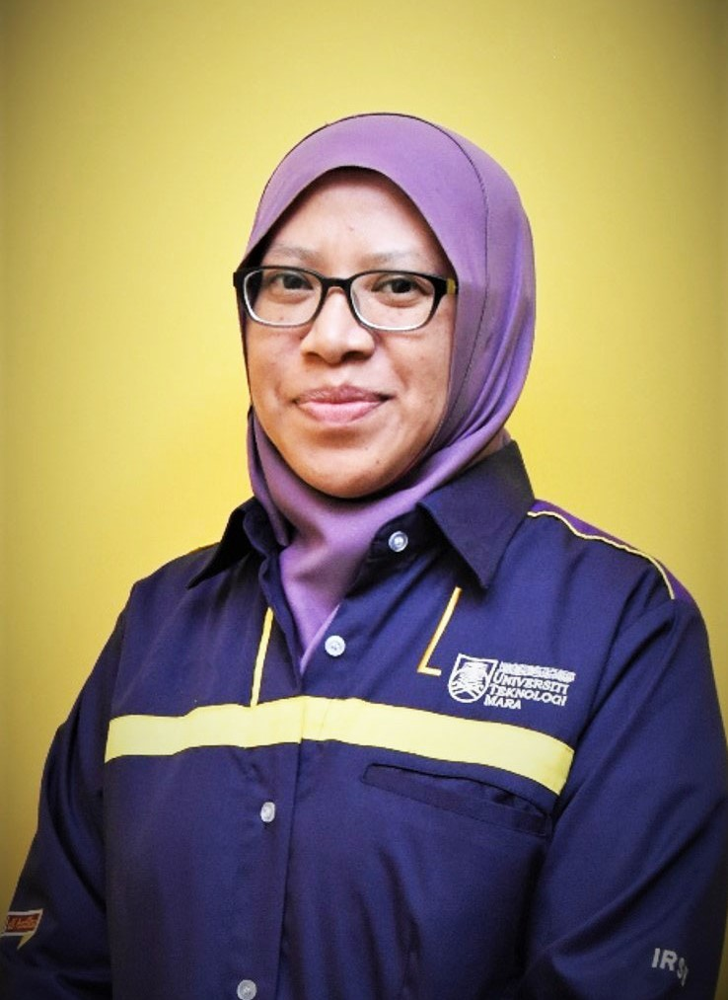

| 'Everything will diminishes when it is used execpt knowledge' -Imam Ali- |
|---|

Wan Satirah Binti Wan Mohd Saman is a senior lecturer of Universiti Teknologi Mara
Mara (UiTM)
under Faculty of Information Management. Her research interests are to the
Legal Records Management, Courtroom technologies,
Legal Information Management, Medico-legal, Intellectual properties,
E-Government, Information Enterprenuership, Information needs and also Information seeking behavior.
She also expert in Legal Information Sources and Services, Legal Records Management and Records Management.